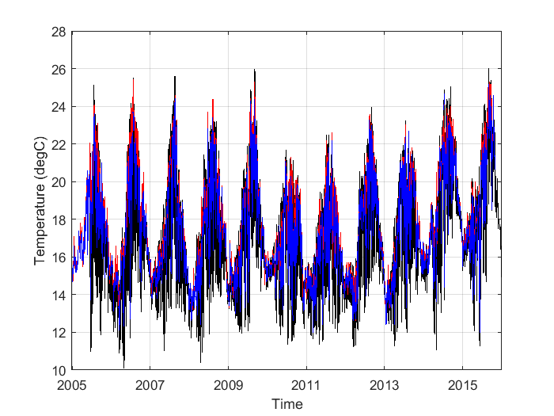
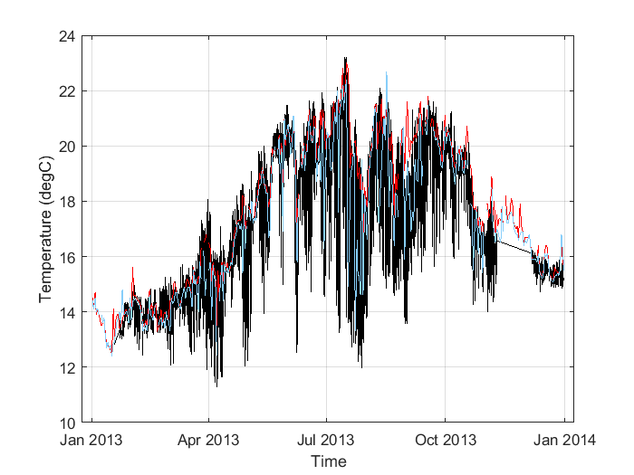
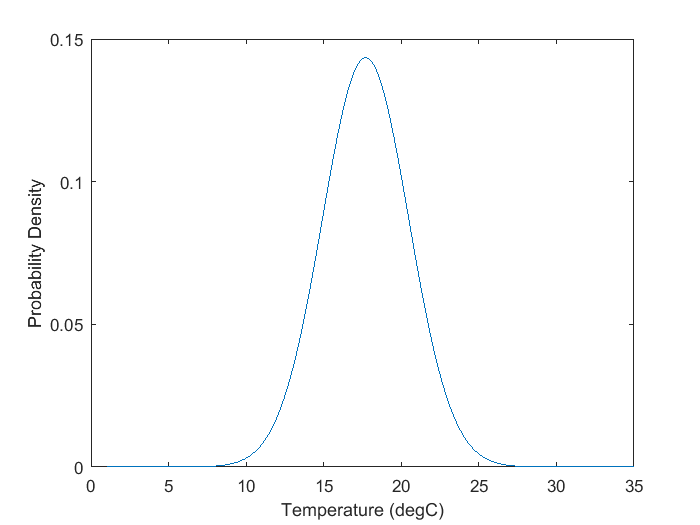
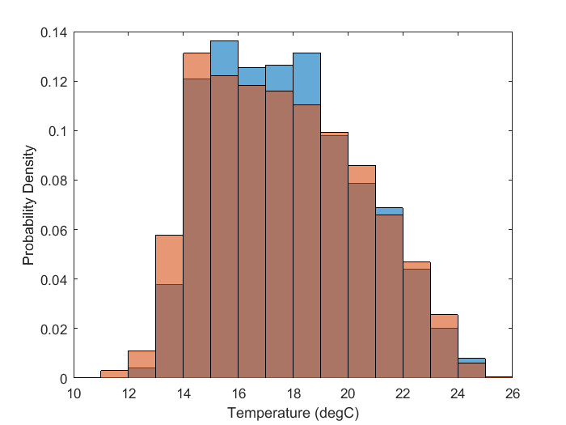
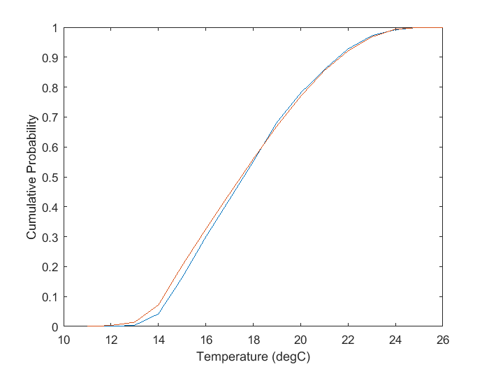

Contents
Ren_data1_week2.m
HW week 2, Look at temperature from Scripps Pier, manual versus
automatic sampling, compare
A. Ren October 12, 2017
Load Data
Manual Scripps Shore Station Data is in an excel file:
load('scrippspier_manual_t.mat', 'scrippsmanualdata', ...
'header_scrippsmanualdata')
yearvector = scrippsmanualdata(:, 1);
monthvector = scrippsmanualdata(:, 2);
dayvector = scrippsmanualdata(:, 3);
hourvector = floor(scrippsmanualdata(:, 4)/100);
minutevector = scrippsmanualdata(:, 4) - (hourvector*100);
secondvector = repmat([0], size(yearvector, 1), 1);
scrippsmanual_time = datetime(yearvector, monthvector, dayvector, ...
hourvector, minutevector, secondvector, ...
'TimeZone', 'America/Los_Angeles');
scrippsmanual_stemp = scrippsmanualdata(:, 6);
scrippsmanual_btemp = scrippsmanualdata(:, 8);
yearlist = 2005:2015;
SP_temp_2015 = [];
SP_time_2015 = [];
SP_depth_2015 = [];
for n = 1:length(yearlist);
yearof = yearlist(n);
fileloca = sprintf('http://sccoos.org/thredds/dodsC/autoss/scripps_pier-%04d.nc', yearof);
newtemp = ncread(fileloca, 'temperature');
newtime = ncread(fileloca, 'time');
newdepth = ncread(fileloca, 'depth');
SP_temp_2015 = [SP_temp_2015; newtemp];
SP_time_2015 = [SP_time_2015; newtime];
SP_depth_2015 = [SP_depth_2015; newdepth];
end
badvalue = find(SP_temp_2015 > 30);
SP_temp_2015(badvalue) = NaN;
SP_time_2015(badvalue) = NaN;
SP_depth_2015(badvalue) = NaN;
SP_temp_2015 = double(SP_temp_2015);
SP_time_2015 = double(SP_time_2015);
SP_depth_2015 = double(SP_depth_2015);
SP_time_2015_mtlabtime = datetime(SP_time_2015, 'ConvertFrom', ...
'posixtime', 'TimeZone', 'America/Los_Angeles');
save('scrippspier_auto_t.mat', 'SP_temp_2015', 'SP_time_2015', ...
'SP_depth_2015', 'SP_time_2015_mtlabtime')
Basic Plot
figure('Name', 'Temperature, Raw Comparison')
plot(SP_time_2015_mtlabtime, SP_temp_2015, 'k', 'LineWidth', 0.5)
hold on
startday = find(scrippsmanual_time > ...
datetime([2005 01 01], 'TimeZone', 'America/Los_Angeles'), ...
1, 'first');
plot(scrippsmanual_time(startday:end), ...
scrippsmanual_stemp(startday:end), 'r', 'LineWidth', 0.5)
plot(scrippsmanual_time(startday:end), ...
scrippsmanual_btemp(startday:end), 'b', 'LineWidth', 0.5)
xlim([datenum(2004, 12, 31) datenum(2016, 1, 2)])
grid on
xlabel('Time')
ylabel('Temperature (degC)')

Lots of data, pick one year to zoom in, say 2013
startday1 = find(...
SP_time_2015_mtlabtime > ...
datetime([2013 01 01], 'TimeZone', 'America/Los_Angeles'), 1, 'first');
endday1 = find(...
SP_time_2015_mtlabtime > ...
datetime([2013 12 31], 'TimeZone', 'America/Los_Angeles'), 1, 'first');
startday2 = find(...
scrippsmanual_time > ...
datetime([2013 01 01], 'TimeZone', 'America/Los_Angeles'), 1, 'first');
endday2 = find(scrippsmanual_time > ...
datetime([2013 12 31], 'TimeZone', 'America/Los_Angeles'), 1, 'first');
Plot 2013
figure('Name', 'Temperature, raw, 2013 comparison')
plot(SP_time_2015_mtlabtime(startday1:endday1), ...
SP_temp_2015(startday1:endday1), 'k', 'LineWidth', 0.5)
hold on
plot(scrippsmanual_time(startday2:endday2), ...
scrippsmanual_stemp(startday2:endday2), 'r', 'LineWidth', 0.7)
plot(scrippsmanual_time(startday2:endday2), ...
scrippsmanual_btemp(startday2:endday2), 'Color', [135 206 250]/255, 'LineWidth', 0.5)
grid on
xlabel('Time')
ylabel('Temperature (degC)')

Manual Temperature Record : use average of surface and bottom
scrippsmanual_avtemp = (scrippsmanual_stemp + scrippsmanual_btemp)/2;
Means and Error of Mean
since manual record ends on Oct 31, 2015, use automatic record until
that day
since automatic record starts on Jun 16, 2005, use manual record
starting then
endday4 = find(SP_time_2015_mtlabtime > ...
datetime([2015 10 31 9 25 0], 'TimeZone', 'America/Los_Angeles'), ...
1, 'first');
startday4 = find(scrippsmanual_time > ...
datetime([2005 06 16], 'TimeZone', 'America/Los_Angeles'), ...
1, 'first');
manualdata = scrippsmanual_avtemp(startday4:end);
automadata = SP_temp_2015(1:endday4);
SP_man_av = mean(manualdata, 'omitnan'); disp('mean: '); disp(SP_man_av)
SP_aut_av = mean(automadata, 'omitnan'); disp(SP_aut_av)
SP_man_N = sum(~isnan(manualdata)); disp('N: '); disp(SP_man_N)
SP_aut_N = sum(~isnan(automadata)); disp(SP_aut_N)
SP_man_av_std = std(manualdata, 'omitnan')/ sqrt(SP_man_N);
SP_aut_av_std = std(automadata, 'omitnan')/ sqrt(SP_aut_N);
disp('error of mean: '); disp(SP_man_av_std); disp(SP_aut_av_std)
mean:
17.7861
17.6994
N:
3403
1069188
error of mean:
0.0448
0.0027
Variance / Standard deviation
SP_man_std = std(manualdata, 'omitnan'); disp(SP_man_std)
SP_aut_std = std(automadata, 'omitnan'); disp(SP_aut_std)
manualtime = scrippsmanual_time(startday4:end);
SP_aut_subs_i = [];
for n = 1:length(manualtime)
subtractvalue = abs(SP_time_2015_mtlabtime - manualtime(n));
subtractvalue = seconds(subtractvalue);
indexsmall = find(subtractvalue == min(subtractvalue));
if length(indexsmall) >1
indexsmall = indexsmall(1);
elseif isempty(indexsmall);
indexsmall = NaN;
end
SP_aut_subs_i = [SP_aut_subs_i, indexsmall];
end
SP_aut_subs_std = std(automadata(~isnan(SP_aut_subs_i)), 'omitnan');
disp(SP_aut_subs_std)
2.6116
2.7812
3.3149
Theoretical PDFs
b = (...
sqrt(...
12*(SP_aut_std^2)...
)...
+(2* SP_aut_av)...
)/2;
a = 2* SP_aut_av - b;
disp('a: '); disp(a)
disp('b: '); disp(b)
pd = 1/(b-a);
disp(pd)
x = 1:0.1:35;
y = (1/(SP_aut_std*sqrt(2*pi)))*exp((-(x-SP_aut_av).^2)/(2*SP_aut_std^2));
figure
plot(x, y)
ylabel('Probability Density')
xlabel('Temperature (degC)')
a:
12.8823
b:
22.5165
0.1038

pdfs
edges = 10:1:26;
figure
h = histogram(manualdata, edges, 'Normalization', 'pdf');
hold on
h2 = histogram(automadata, edges, 'Normalization', 'pdf');
ylabel('Probability Density')
xlabel('Temperature (degC)')

crude cdfs
cdf_manual = cumsum(h.Values);
cdf_automa = cumsum(h2.Values);
figure
plot(11:26, cdf_manual)
hold on
plot(11:26, cdf_automa)
ylabel('Cumulative Probability')
xlabel('Temperature (degC)')
diff = abs(cdf_automa - cdf_manual);
maxdiff = max(diff);
calpha = 1.63;
testD = calpha * sqrt( (SP_man_N + SP_aut_N)/ (SP_man_N * SP_aut_N));
disp('maximum difference (D) : '); disp(maxdiff);
disp('D parameter test : '); disp(testD);
maximum difference (D) :
0.0403
D parameter test :
0.0280
